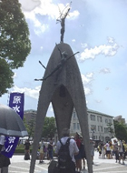

核兵器廃絶と平和への想いをあらたに
埼玉県生協連
｢ヒロシマの心を次世代のあなたへ～あなたは何を継承しますか～｣、｢戦争も核兵器もない平和な未来を～継承・ナガサキの想いをあなたから誰に伝えますか｣をテーマに、8月4日～9日まで日本生協連の｢2017ピースアクションinヒロシマ・ナガサキ｣がおこなわれ県生協連からも参加しました。
≪概 要≫ヒロシマ8月4日～6日
4日 ｢袋町小学校平和資料館｣
| 袋町小学校資料館 |
袋町小学校の校舎は、近代的な鉄筋コンクリートの建物であったため1945年8月6日の原爆の投下にも耐え外郭を残し、当時被爆者の避難場所や救護所、地域住民などが安否を尋ねる場所となっていました。2000年に老朽化による解体工事で伝言が残る漆喰や黒板が発見されて焼けこげた壁や床が｢伝言板｣としての機能を持っていたことが確認され2002年に平和資料館となりました。
4日 ｢川から見る被爆の実相｣
| 川から見る原爆ドーム |
広島は江戸時代城下町として栄え、川は輸送の中心として川船が浮かび広島の人々の生活を支える大きな役割を果たしていました。戦争のたびに広島のまちは人や物が集まり、広島の港から陸軍の兵士や物資を戦場へ送っていました。原爆投下後は多くの犠牲者が水を求め入水し、様子は一変しましたが当時の状況を想像することさえ出来ないほど現在はとても穏やかでした。原爆ドームは1996年世界遺産に指定、永久保存されることとなりました。
5日 ｢碑めぐり｣
|  |
| 原爆の子の像 |
平和公園内には慰霊碑が様々建立されています。佐々木貞子さんは2歳で被爆し、12歳で白血病を発病し亡くなられました。佐々木貞子さんの級友はこの死をきっかけに原爆で亡くなられた子どもたちの霊を慰め平和を築くための像を作ろうと呼びかけをおこない、全国3100校余りの生徒から募金が集まり国外からの支援も受けて｢原爆の子の像｣は1958年5月5日に建立しました。佐々木貞子さんが病気の回復を願って折り続けた折り鶴を掲げる子が象徴的な慰霊碑です。
5日 ｢ヒロシマ虹のひろば｣
| 生協連の展示物 |
広島市立東原中学校吹奏楽部の演奏、広島市立沼田高校の演劇、広島県立基町高校の原爆の絵、広島県立福山工業高校のVR体験で知る核の恐ろしさ安田女子大学書道ガールズの大書パフォーマンス、全国生協の平和活動展示などで参加者の交流が行われました。今年度は埼玉県生協連としてもブース出展を行いヒバクシャ国際署名埼玉県連絡会の活動を展示しました。フィナーレでは、2017子ども平和会議inヒロシマで検討されたアピール文が読み上げられ、採択されました。今回のテーマに沿って、次を担う若い世代の取り組みがイキイキと表現されピースアクションinナガサキにつなぎました。
≪概 要≫ナガサキ8月7日～9日
7日 ｢原爆資料館で聴く被爆の証言｣～原爆資料館平和学習室
当時8歳で爆心地に近い城山町で被爆、一瞬にして私を一人にしてみんな消えてしまいました。46年間原爆の話はできませんでしたが、ある本の中に私の体験記を書いたのがキッカケとなり被爆体験を伝えています。戦後、一人ぼっちで地獄のような日々を送りましたが、隣近所の方に助けられました。人間は1人では生きていきません。支え合っていきています。平和の原点は人の痛みがわかる心を持つこと、平和をつくり守り伝える人になってください。長崎を最後の被爆地にと願っています｡
8日 生協平和のまち歩き～長崎を再発見しよう～山王神社周辺コース
爆心地から1km以内で最も被害が大きく生存が許されない、当時の住宅街と文教地区を見学しました。旧長崎医科大学では｢鉄筋コンクリートで被爆を経験した唯一のゲストハウス、895人の名前が彫られた50周年記念碑、講堂の礎石、左の門柱のみが爆風の方向に傾いた正門｣、続いて、山王神社の一時は枯れかけたものの2か月後には新芽を吹き始めた復興のシンボルとなった被爆大クス、爆心地に面した側の半分が爆風の影響により倒壊した山王神社の二の鳥居(1本柱鳥居)では、爆心側の寄進者名は表面が削られ読み取ることができない熱線の威力を伝えていますと説明、72年前の惨状を想像しながら散策しました。
8日 「ナガサキ虹のひろば」13:30～長崎市民会館文化ホール(参加41生協約650人)
私立長崎玉成高校ハンドベル部のオープニングから始まりました。日本生協連の本多会長が｢核兵器禁止条約が122か国で採択され重要な一歩が踏み出しました｡ヒバクシャ国際署名もスタートし世界に広がっています。被爆者の想いを受け止め核廃棄廃絶と平和のためにしっかり活動していきましょう｣と主催者挨拶。続いて、黙祷、田上富久長崎市長(代理 三藤義文副市長)来賓挨拶、私立長崎活水高校平和学習部の平和の取り組み、ヒバクシャ国際署名、子ども平和会議in長崎の取り組み報告、フィナーレは被爆者歌う会｢ヒマワリ｣の合唱で終了しました。
9日 「長崎原爆犠牲者慰霊平和祈念式典」
田上市長は｢核兵器禁止条約が122か国の賛成で採択されました。これはゴールではありません。ようやく生まれたこの条約をいかに活かし、歩みを進めることができるかが、今、人類に問われています。日本政府に訴えます。核兵器禁止条約の交渉会議にさえ参加しない姿勢を、被爆地は到底理解できません。唯一の戦争被爆国として、核兵器禁止条約への1日も早い参加を目指し、核の傘に依存する政策の見直しを進めてください｡日本の参加を国際社会は待っています｡｣と平和宣言をしました。